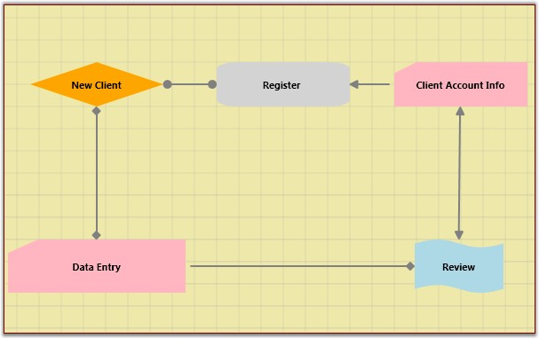
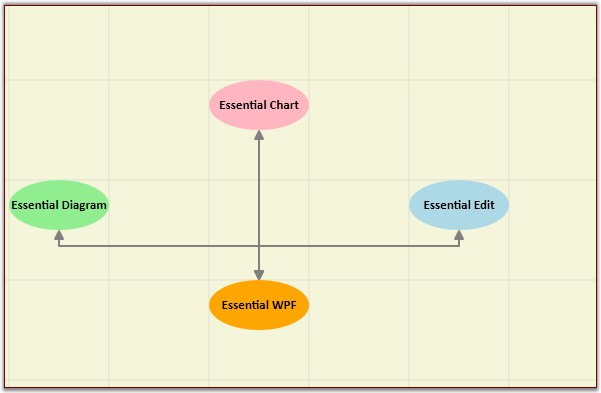

The drawing area of a DiagramControl can be rendered with horizontal and vertical grid lines to allow for proper positioning of the nodes.
Table 68: Property Table
|
Property |
Description |
Type of the property |
Value it accepts |
Any other dependencies/ sub properties associated |
|
ShowVerticalGridLine |
Gets or sets a value indicating whether vertical grid lines are displayed or not.
Default valueisTrue. |
Dependency property |
Boolean(True/False) |
No |
|
ShowHorizontalGridLine |
Gets or sets a value indicating whether horizontal grid lines are displayed or not.
Default value is True. |
Dependency property |
Boolean(True/False) |
No |
Show or Hide Grid Lines
The horizontal and vertical grid lines can be enabled or disabled using the ShowHorizontalGridLine and ShowVerticalGridLine properties.
The following code can be used to set these properties.
|
[XAML]
<Window x:Class="WpfApplication1.Window1" xmlns="http://schemas.microsoft.com/winfx/2006/xaml/presentation" xmlns:x="http://schemas.microsoft.com/winfx/2006/xaml" Title="EssentialDiagramWPF" Height="400" Width="600" xmlns:sfdiagram="clr-namespace:Syncfusion.Windows.Diagram;assembly=Syncfusion.Diagram.WPF" xmlns:local="clr-namespace:WpfApplication1"> <Grid Name="diagramgrid"> <sfdiagram:DiagramControl IsSymbolPaletteEnabled="True" > <sfdiagram:DiagramControl.Model> <sfdiagram:DiagramModel x:Name="diagramModel" > </sfdiagram:DiagramModel> </sfdiagram:DiagramControl.Model> <sfdiagram:DiagramControl.View > <sfdiagram:DiagramView ShowHorizontalGridLine="True" ShowVerticalGridLine="True"> </sfdiagram:DiagramView> </sfdiagram:DiagramControl.View> </sfdiagram:DiagramControl> </Grid> </Window> |
|
[C#]
DiagramControl dc = new DiagramControl(); dc.IsSymbolPaletteEnabled = true; DiagramView view = new DiagramView(); view.ShowHorizontalGridLine = true; view.ShowVerticalGridLine = true; view.Bounds = new System.Drawing.Thickness(0, 0, 1000, 1000); dc.View = view; diagramgrid.Children.Add(dc); |
|
[VB]
Dim dc As New DiagramControl() dc.IsSymbolPaletteEnabled = True Dim view As New DiagramView() view.ShowHorizontalGridLine = True view.ShowVerticalGridLine = True view.Bounds = New System.Drawing.Thickness(0, 0, 1000, 1000) dc.View = view diagramgrid.Children.Add(dc) |

Figure 143: GridLines
GridLine Offset
The vertical and horizontal spacing between grid lines can be specified using the GridVerticalOffset and GridHorizontalOffset properties respectively.
The default value is 25d for both properties.
Table 69: Property Table
|
Property |
Description |
Type of the property |
Value it accepts |
Any other dependencies/ sub properties associated |
|
GridHorizontalOffset |
Gets or sets the HorizontalOffset value of the grid. |
CLR Property |
double
|
No |
|
GridVerticalOffset |
Gets or sets the VerticalOffset value of the grid. |
CLR Property |
double |
No |
The following code can be used to set these properties.
|
[XAML]
<Window x:Class="WpfApplication1.Window1" xmlns="http://schemas.microsoft.com/winfx/2006/xaml/presentation" xmlns:x="http://schemas.microsoft.com/winfx/2006/xaml" Title="EssentialDiagramWPF" Height="400" Width="600" xmlns:sfdiagram="clr-namespace:Syncfusion.Windows.Diagram;assembly=Syncfusion.Diagram.WPF" xmlns:local="clr-namespace:WpfApplication1"> <Grid Name="diagramgrid"> <sfdiagram:DiagramControl IsSymbolPaletteEnabled="True" > <sfdiagram:DiagramControl.Model> <sfdiagram:DiagramModel x:Name="diagramModel" > </sfdiagram:DiagramModel> </sfdiagram:DiagramControl.Model> <sfdiagram:DiagramControl.View > <sfdiagram:DiagramView ShowHorizontalGridLine="True" ShowVerticalGridLine="True"> <syncfusion:DiagramView.Page> <syncfusion:DiagramPage x:Name="diagramPage" MeasurementUnits="Pixels" GridHorizontalOffset="100" GridVerticalOffset="100"/> </syncfusion:DiagramView.Page> </sfdiagram:DiagramView> </sfdiagram:DiagramControl.View> </sfdiagram:DiagramControl> </Grid> </Window> |
|
[C#]
DiagramControl dc = new DiagramControl(); dc.IsSymbolPaletteEnabled = true; DiagramView view = new DiagramView(); view.ShowHorizontalGridLine = true; view.ShowVerticalGridLine = true; (view.Page as DiagramPage).GridHorizontalOffset = 100; (view.Page as DiagramPage).GridVerticalOffset = 100; dc.View = view; diagramgrid.Children.Add(dc); |
|
[VB]
Dim dc As New DiagramControl() dc.IsSymbolPaletteEnabled = True Dim view As New DiagramView() view.ShowHorizontalGridLine = True view.ShowVerticalGridLine = True TryCast(view.Page, DiagramPage).GridHorizontalOffset = 100 TryCast(view.Page, DiagramPage).GridVerticalOffset = 100 dc.View = view diagramgrid.Children.Add(dc) |

Figure 144: GridOffset
Customizing the GridLineStyle
The following code illustrates how to customize GridLineStyle:
|
[C#] Pen pen = new Pen(Brushes.Gray, 1) { DashCap = PenLineCap.Triangle, Thickness=3, DashStyle = new DashStyle(new double[] { 2, 8 }, 1), Brush=new SolidColorBrush(Colors.MidnightBlue) }; Pen pen1 = new Pen(Brushes.Gray, 1) { DashCap = PenLineCap.Round, Thickness=2, DashStyle = new DashStyle(new double[] { 2, 8 },1), Brush=new SolidColorBrush(Colors.Green) };
diagramView.HorizontalGridLineStyle = pen1; diagramView.VerticalGridLineStyle = pen; |
|
[VB] Dim pen As New Pen(Brushes.Gray, 1) With {.DashCap = PenLineCap.Triangle, .DashStyle = New DashStyle(New Double() { 2, 8 }, 1), .Brush = New SolidColorBrush(Colors.MidnightBlue)}
Dim pen1 As New Pen(Brushes.Gray, 1) With {.DashCap = PenLineCap.Round, .DashStyle = New DashStyle(New Double() { 2, 8 },1), .Brush = New SolidColorBrush(Colors.Green)}
diagramView.HorizontalGridLineStyle = pen1 diagramView.VerticalGridLineStyle = pen |